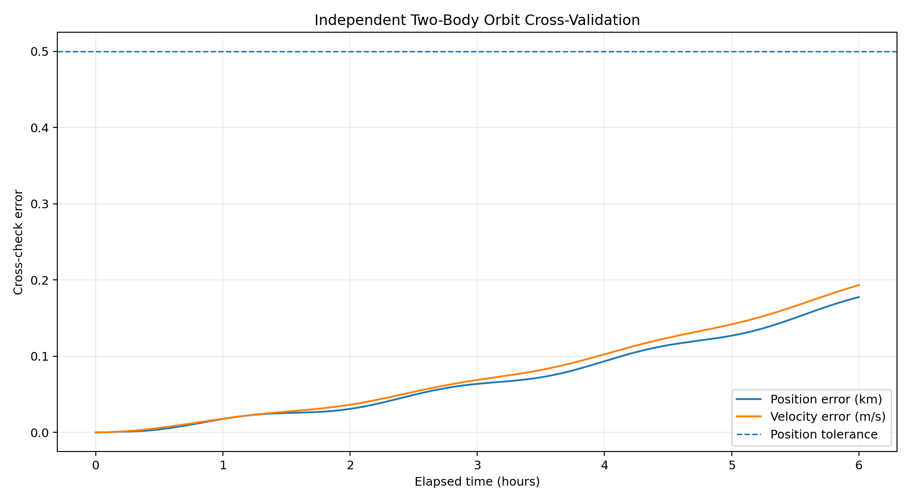

OpenSat Mission Lab v1.1
Independent Orbit Validation
PASS
India Flood Monitoring Demonstrator
Samples
361
361
Max position error
0.177651 km
0.177651 km
Max velocity error
0.193441 m/s
0.193441 m/s
Reference
Universal variables
Universal variables

External-tool interchange
The generated request, blank CSV template, GMAT starter script, and Orekit JSON request let a contributor replace the internal reference with output from an independently installed tool.
opensatlab compare-external primary.csv reference.csv --output outputs/external
Scope: This is software cross-validation for an educational two-body case. It is not agency certification or flight qualification.